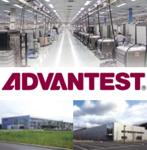
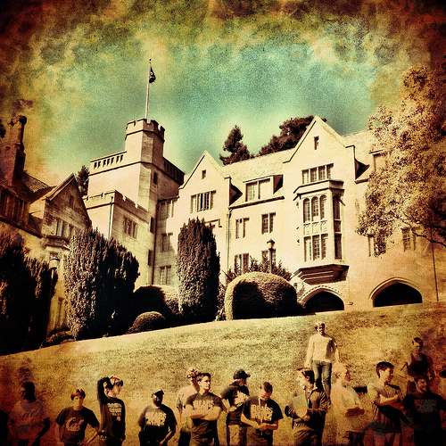

Hi! I'm Sean.
I'm a software engineer and indepedent iPhone app developer |
About Me
I graduated from UC Berkeley with a BS in Electrical Engineering and Computer Sciences. Most recently, I worked as a software engineering manager at Ancestry.com. When I'm not coding, I like to run, travel, and scuba dive.
Here are some of my side projects
DEEP BLUE AND GOLD (Link) - Built with two other people for my EE149 (Embedded Systems) final project. Constructed a plexiglass chess board that provides hints and legal moves for a human player while he/she plays a computer. The hints, legal moves, and computer moves are indicated by Neopixel LED strips underneath the board that allow certain squares to light up. Piece positions are detected by way of magnetic reed switches underneath the board and magnets in the pieces. I programmed the AI for the board, and helped wire the circuitry.
Below is an expanded resume. A pdf can be found here.
Education
University of California, Berkeley
May 2016
Electrical Engineering and Computer Science, B.S.
Berkeley, CA
Relevant Coursework:
- Structure and Interpreation of Computer Programs (Python, Scheme)
- Data Structures and Algorithms (Java)
- Machine Structures (C, MIPS)
- Discrete Mathematics and Probability
- Algorithms
- Operating Systems (C, Java)
- Artificial Intelligence (Python)
- Introduction to Optical Engineering
- Introduction to Microelectronic Circuits
- Systems and Signals
- Embedded Systems
- Auto-grading and Online Education
Work Experience
Ancestry.com
March 2021 - April 2022
Software Engineering Manager
San Francisco, CA
• Managed a team of 8 developers in augmenting and scaling a DNA pipeline that processes millions of customer DNA samples in the AWS Cloud each year. The pipeline calculates genetic insights for customers’ ethnicities, DNA matches, etc.
• Planned team roadmap and collaborated with other stakeholders to release new genomic algorithms at key delivery dates
• Provided mentorship to other engineers, including bi-weekly check-in meetings with each member of my team
March 2019 to February 2021
Senior Software Engineer
August 2016 to February 2019
Software Engineer
May 2015 to August 2015
Software Engineer Intern
• Collaborated with DNA Scientists to test and optimize genetic algorithms for deployment in a production environment
• Utilized AWS-managed services to reduce costs and improve automation of a DNA pipeline
• Provided mentorship to interns
Python
Java
AWS
SQL
Shell/Bash

Advantest
June 2014 - August 2014
Software Engineering Intern
San Jose, CA
• Improved streaming of Android smartphone screen to company’s QuikStress software from 1⁄3 fps to 10 fps (30x speedup). Worked with Android SDK, C#, C++, and bash scripts
• Captured data on how a phone’s battery life, audio quality, and video quality are adversely affected under various stresses
C#JavaC++Visual StudioAndroid SDKAndroid NDKShell scripting
 CS10 edX Course Development
Spring 2013 - Spring 2014
CS10 edX Course Development
Spring 2013 - Spring 2014
Web Developer
Berkeley, CA
Worked on porting the Beauty and Joy of Computing course at Berkeley (CS10) to the edX platform in preparation for the course becoming an AP Computer Science Principles class in high schools nationwide in the year 2016. Roles: Team lead for autograding, which involved converting the visual programming language used in the course to python, which could then be sent via an ajax request to our grading server to be tested by extensive python unit tests Programmed new features for Snap! and troubleshot various bugs in the javascript code base. Some of my features that are currently in staging are Google Drive integration, a bug submit feature, and the ability to print text to the main stage
HTMLJavascriptJQueryPython

Bowles Residence Hall Association
January 2013 - May 2013
Social Vice President
Berkeley, CA
Planned and supervised events at the Bowles residence hall, and helped lead residence hall weekly meetings.